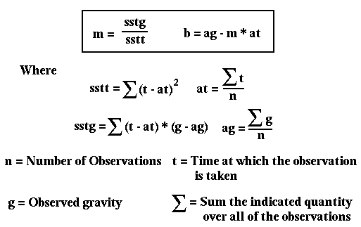

Least Squares Best Fit Straight Line to a Set of Observations
Finding Least-squares estimates to the best fitting straight line to a set of observations is a commonly used data analysis technique. The specifics and pitfalls of this methodology can be found in many elementary statics and inversion textbooks. In this discussion, I will only provide you with the relevant formulii for computing the least-squares estimate. You are encouraged to explore the questions concerning its use and general applicability through other sources.
To compute the best fitting straight line to our set of gravity observations we will use a criteria known as the least squares criteria. This criteria simply defines, in a quantitative way, what we mean by best fitting. Although we will not describe any other criteria, you should be aware of the fact that the least-squares criteria is one of many possible definitions for best fitting. In using this criteria, we will find the straight line that minimizes the squared sum of differences between the predicted and observed gravity at any time.
For our problem, the form of the straight line we will use to estimate the observations is pg = m t + b, where pg is the predicted gravity at time t, m is the slope of the line and b is the intercept of the line (i.e., b is the value of the predicted gravity at t=0).
Given a series of gravity observations, og, each made at some time ot, then it can be shown that m and b are given as:

Once you have computed your best fit line, you can estimate how well it actually fits the observations by computing the standard deviation of the observations about the best-fit line (this is also commonly referred to as the square root of the mean-squared error). This estimate of the error is computed by taking the square root, of the sum of differences between the observed and the predicted gravity squared divided by the number of observations minus one.